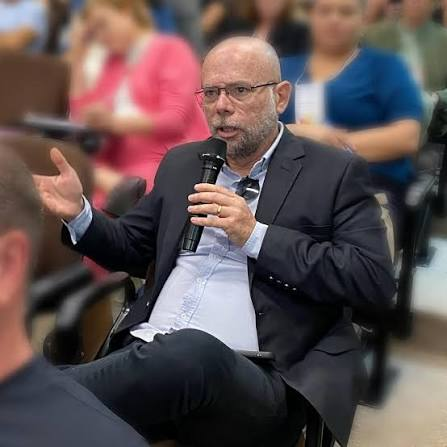

O MP-GO apura um suposto esquema de fraude em licitações de salas modulares (módulos habitáveis) envolvendo a Prefeitura de Rio Verde e outros municípios goianos.
O processo abaixo ainda não está em segredo de justiça. Qualquer cidadão pode acessar os documentos.
Decisão judicial de 12/05/2026 — 1º Juízo das Garantias de Goiânia. Informe o número acima no campo de busca.
Provas documentais
Trechos de documentos públicos do processo judicial. Toque na imagem para ampliar.
Quer ler o processo inteiro? Baixe o PDF completo com todos os documentos.
Baixar processo completo (PDF) ↓Entenda em poucas palavras
Tudo abaixo vem de documentos oficiais e reportagens públicas. Ninguém foi condenado — todos são presumidos inocentes.
Fraude em licitações e contratações de módulos habitáveis (salas de aula e unidades de saúde) em Rio Verde e outros municípios de Goiás.
O GAEPP (grupo especial do MP-GO) conduz o Procedimento Investigatório Criminal nº 202500430220.
O Pregão Eletrônico nº 047/2021, feito pela Prefeitura de Rio Verde, teria especificações que limitavam a concorrência, segundo a decisão judicial.
3 prisões preventivas, 4 afastamentos de cargo por 90 dias, 44 buscas e apreensões, quebras de sigilo e interceptações — na Operação Simulatio, em 11/08/2026.
Panorama
Estimativas apontadas na decisão judicial — não são valores definitivos.
Fonte: Decisão do 1º Juízo das Garantias de Goiânia (TJGO), processo 5990208-61.2025.8.09.0051
Registro audiovisual
Reportagens oficiais e veiculadas na imprensa sobre a Operação Simulatio.
Reportagem sobre a operação do MPGO com imagens da Prefeitura de Rio Verde e coletiva do prefeito.
Reels e publicações nas redes:
Cronologia
Prefeitura abre licitação para compra de módulos habitáveis (salas modulares).
Uruaçu, Inhumas, Luziânia, Goianésia e Rio Quente aderem à ata de preços de Rio Verde.
Procedimento Investigatório Criminal nº 202500430220.
Decisão do 1º Juízo das Garantias de Goiânia no processo 5990208-61.2025.8.09.0051.
MP-GO cumpre 3 prisões, 4 afastamentos e 44 buscas e apreensões.
Envolvidos
Pessoas mencionadas no processo judicial. Nenhuma condenação — todos são presumidos inocentes.
Ex-primeira-dama e secretária de Assistência Social à época
Relacionada ao Pregão Eletrônico nº 047/2021, segundo a decisão.

Secretário municipal de Educação de Rio Verde
Relacionado ao Pregão Eletrônico nº 047/2021, segundo a decisão.
Ex-prefeito de Rio Verde (GO)
Prefeito durante o Pregão Eletrônico nº 047/2021.
Segundo a decisão judicial, os caminhos do pregão convergem na gestão de Paulo do Vale à frente da Prefeitura.
Documentos, decisões judiciais, reportagens e linha do tempo completa estão na versão detalhada do dossiê.
Acessar dossiê completo →